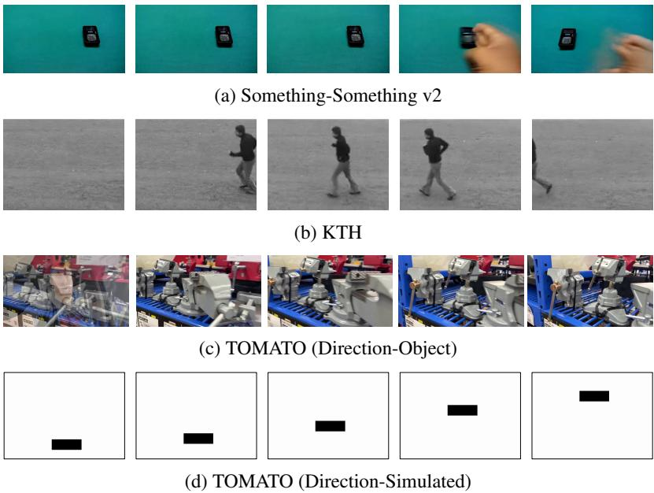

Video diagnostics · P2 · 2026-05-24
DeltaDirect：Video-LLM 不是完全看不到运动，而是运动方向信号在 projector/LLM 接口处被错绑。
这类诊断比单纯刷视频 QA 更有价值，因为它定位了视觉表征到语言读出的断点。
编号2605.22823
优先级P2
类别Video diagnostics
会议arXiv
方法feature-delta motion vector objective at projector level
来源arXiv / OpenReview
先说结论。Video-LLM 不是完全看不到运动，而是运动方向信号在 projector/LLM 接口处被错绑。 这类诊断比单纯刷视频 QA 更有价值，因为它定位了视觉表征到语言读出的断点。


它真正改变的是训练信号，而不是榜单数字
feature-delta motion vector objective at projector level。这类工作值得被放在通用视觉自监督日报里，不是因为它一定立刻刷新所有 benchmark，而是因为它改变了模型“从哪里拿监督”的方式。
MinerU full.md is now part of the source bundle for this page; the next pass will use it for paper-native English quotes and tighter argument writing.
读这篇时要盯住的风险
当前页面是站点原型，细节还没有逐段引用 MinerU 全文。正式流程会把每篇论文的 abstract、method、caption 和关键表格放进页面生成上下文，并保留至少两段原文引文。
下一步怎么接进日报
每日自动化先筛出 P1/P2，再对 P1 论文跑 MinerU；有 pipeline 或 motivation 图的页面进入 GitHub Pages，飞书只发摘要与入口。